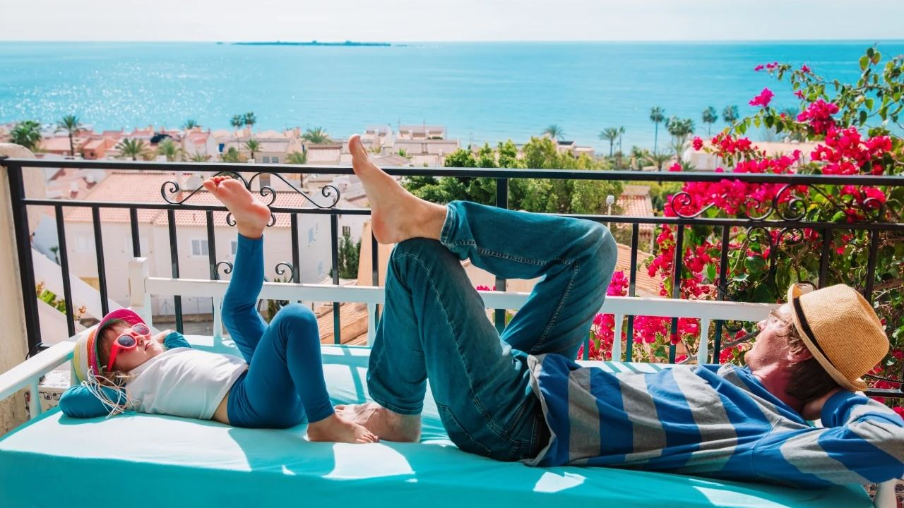
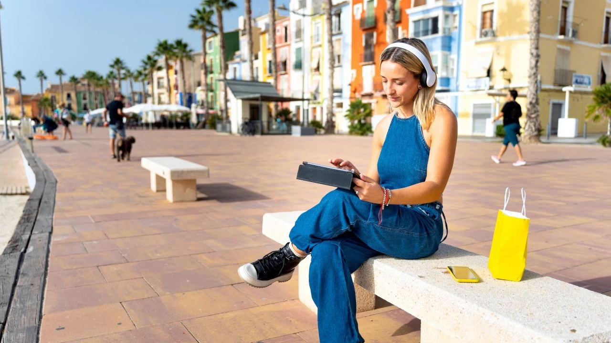
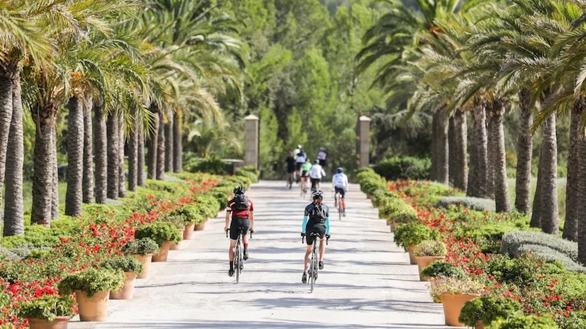
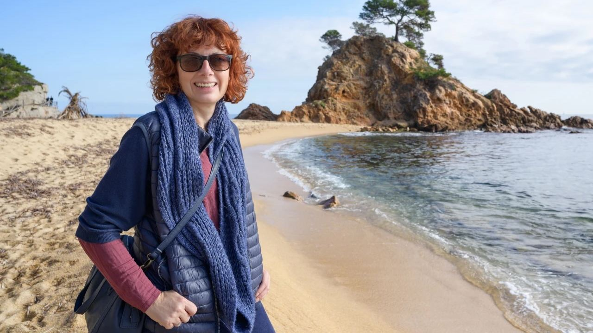

Vivir en España
Extranjeros en España: ¿cómo es la vida después de mudarse?
 Por Aleksandra Kobus · · actualizado · 4 min de lectura
Por Aleksandra Kobus · · actualizado · 4 min de lectura

En resumen: La mayoría de quienes se mudan a España se adaptan durante el primer año, pero los primeros meses exigen esfuerzo: trámites (padrón, registro de residencia, tarjeta sanitaria, residencia fiscal a partir de 183 días), una burocracia con cita previa, un horario más tardío y un mercado laboral con un paro en torno al 10 %, donde el teletrabajo y ser autónomo son habituales. El coste de vida en la costa es más bajo que en el norte de Europa, salvo la vivienda en las zonas más demandadas. Aprender español y apuntarse a actividades locales es lo que más ayuda.
Cada año cientos de miles de personas de otros países hacen de España su hogar, muchas de ellas hispanohablantes de América Latina. Los motivos se repiten: el clima, la vida al aire libre, la comida y, a menudo, un mejor equilibrio entre trabajo y tiempo libre. Pero la mudanza es solo el principio. ¿Cómo es el día a día cuando ya se han deshecho las cajas?
Esta guía recoge lo que nos cuentan nuestros clientes sobre su primer año, de los trámites a las nuevas amistades. Para los pasos previos, vea nuestra guía para mudarse a España.
Las primeras semanas: trámites
- Padrón – empadrónese en el ayuntamiento con su dirección. Se necesita para casi todo.
- Residencia – los ciudadanos de la UE que se quedan más de tres meses se inscriben en Extranjería o en la policía y reciben el certificado verde de registro. Los ciudadanos de fuera de la UE necesitan visado o autorización y después la TIE.
- Sanidad – si trabaja, cotiza o tiene una pensión con formulario S1, puede pedir la tarjeta sanitaria en su centro de salud.
- Banco y suministros – una cuenta española facilita el pago de recibos, comunidad e impuestos locales.
- Carné de conducir – los permisos de la UE siguen siendo válidos; muchos permisos de fuera de la UE deben canjearse en los seis meses siguientes a obtener la residencia, si existe convenio.
- Impuestos – con más de 183 días al año en España se es, por lo general, residente fiscal y se declara la renta mundial aquí.
Casi todas las oficinas funcionan con cita previa, a menudo por internet. Paciencia y copias de todos los documentos ayudan mucho. Más sobre estancias de más de 90 días y el sistema sanitario.
Trabajo y mercado laboral
La tasa de paro en España ronda el 10 %, por encima de la media de la UE, y los sueldos son más bajos que en el norte de Europa. Por eso muchos recién llegados traen su trabajo consigo: teletrabajadores, autónomos y empresarios. El turismo, la vivienda, la sanidad, la informática y los colegios internacionales también buscan personas con idiomas. Quien se traslada por un empleo puede, en algunos casos, acogerse al régimen especial para trabajadores desplazados. Vea las profesiones mejor pagadas en España.
El coste de vida
Los gastos del día a día en la Costa Blanca y la Costa del Sol son más bajos que en la mayor parte del norte de Europa: el mercado, el menú del día y el transporte público tienen buen precio. La excepción es la vivienda: los alquileres en Málaga, Marbella, Alicante y los pueblos costeros más buscados han subido mucho. La luz puede encarecerse en verano si se usa mucho el aire acondicionado. Vea nuestra guía del coste de vida.
Idioma y ritmo diario

Para quien ya habla español la adaptación es mucho más rápida, aunque cambian el vocabulario y algunas costumbres, y en la Comunitat Valenciana también se usa el valenciano. El día empieza y termina más tarde que en otros países: se come hacia las 14 h, se cena después de las 21 h y en los pueblos muchas tiendas cierran a primera hora de la tarde. El verano es más lento y agosto es mes de vacaciones.
Hacer amigos y encontrar su comunidad

La vida en España se hace en la calle: en terrazas, plazas y fiestas del pueblo. La forma más rápida de integrarse es compartir actividades: clubes deportivos, grupos de senderismo y ciclismo, golf, coros, intercambios de idiomas, voluntariado y el colegio de los hijos. En la mayoría de municipios costeros también hay asociaciones internacionales que ayudan a los recién llegados.
Los retos más habituales

- Burocracia – citas, normas distintas según la comunidad y mucha documentación. Un buen gestor o abogado ahorra tiempo.
- Adaptación – los primeros meses cansan, pero mejoran rápido con rutinas y contactos.
- Inviernos tranquilos – algunos destinos se vacían fuera de temporada. Elija un municipio con vida todo el año.
- Nostalgia – es normal, sobre todo el primer invierno. Ayudan las visitas y una rutina propia.
- Vivienda – alquilar primero seis a doce meses es la mejor forma de asegurarse de la zona antes de comprar.
Preguntas frecuentes
¿Cuánto se tarda en adaptarse a España?
La mayoría dice que los primeros seis meses son los más duros por los trámites. Al final del primer año casi todos se sienten en casa.
¿Cuáles son los primeros trámites al llegar a España?
Empadronarse, registrar la residencia (certificado de la UE o TIE), pedir la tarjeta sanitaria, abrir una cuenta bancaria y, si procede, canjear el carné de conducir.
¿Cuándo se es residente fiscal en España?
Por lo general cuando se pasan más de 183 días al año en España o cuando aquí está el centro de intereses económicos o familiares. Entonces se declara la renta mundial en España.
¿Dónde viven más extranjeros en España?
Madrid y Barcelona por trabajo y, en la costa, sobre todo la Costa Blanca y la Costa del Sol, con grandes comunidades internacionales.
El lugar adecuado para empezar
El municipio que elija marcará su primer año más que nada. Si está planeando la mudanza, escríbanos y le ayudaremos a encontrar una zona con vida todo el año y una casa para alquilar o comprar.
Fuentes: Spanish Government – EU citizens' residence (Extranjería) · Agencia Tributaria – tax residence · INE – Labour Force Survey (EPA) · Seguridad Social